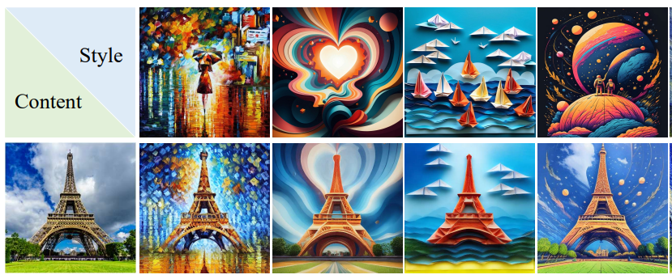
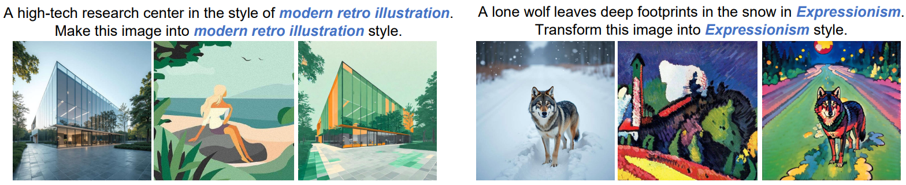
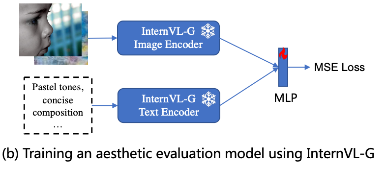
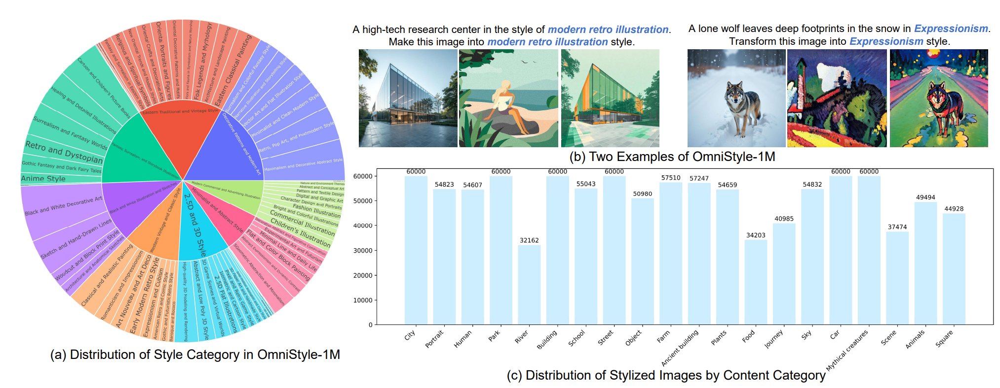
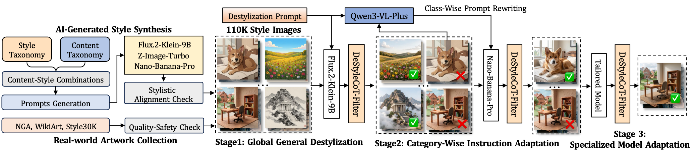
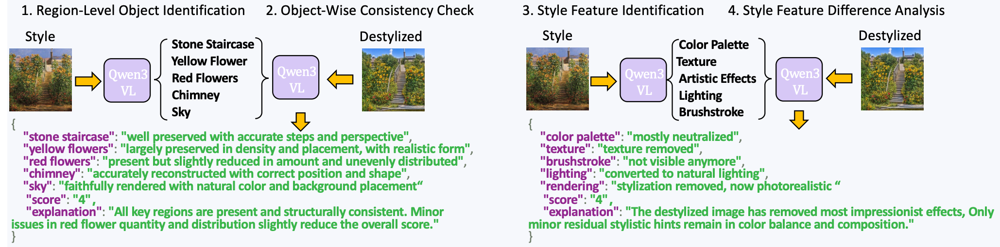
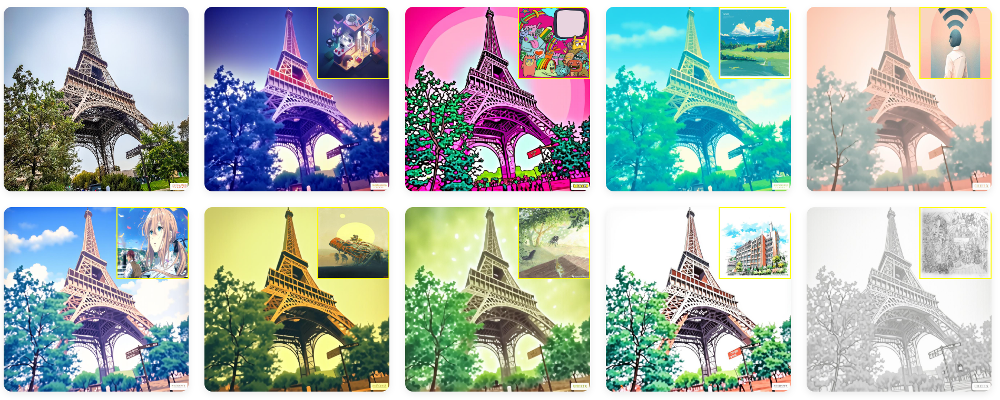
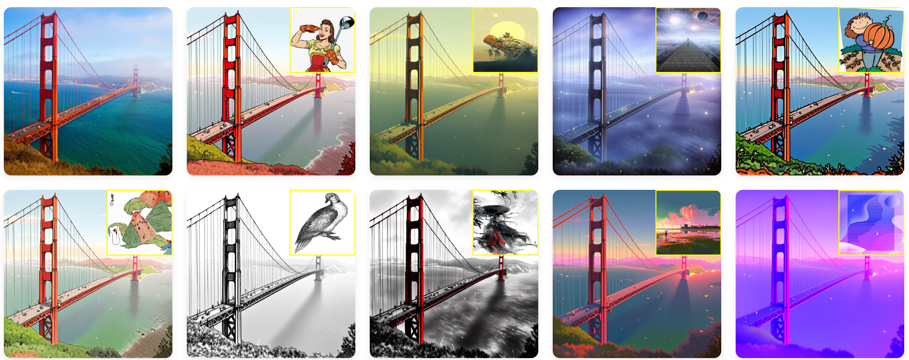
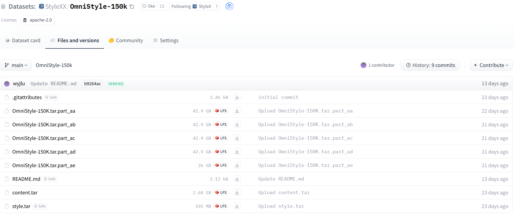

OverviewWhat is StyleForge?
StyleForge is a large-scale, high-quality paired style transfer dataset that unifies two complementary lines of work into a single resource that is both broad in style coverage and faithful in supervision:
Stylization-driven synthesis
Large-scale style-transfer data synthesized by stylizing content with multiple SOTA models.
- Content–Style–Stylized triplets
- 1,000+ style categories
- Unified instruction-based evaluation & filtering
- OmniStyle, CVPR 2025
Destylization-driven synthesis
High-fidelity data built by destylizing real artworks, using them as the only ground truth.
- Destylized–Style–Target triplets
- Real artworks as authentic supervision
- CoT-reinforced interpretable quality filtering
- OmniStyle2 / DeStyle, ECCV 2026
Together they yield 500K+ triplets spanning 1000+ styles, providing a scalable and reliable data foundation for controllable, generalizable, high-fidelity style transfer.
StyleForge shifts style transfer toward a supervised learning paradigm — combining style breadth with supervision fidelity at scale.
01Background & Motivation
Image style transfer renders one image (paintings, cartoons, line art, …) in the artistic style of another, while preserving the original content and structure. It is widely used in digital art, advertising creativity and film production.
The field has evolved from early CNN-based single-image optimization (Gatys et al., CVPR 2016) to modern pipelines centered on diffusion-model fine-tuning (e.g., SigStyle, AAAI 2025). Yet two key challenges remain:
1) Insufficient style generalization: existing methods handle only a few simple styles (oil painting, sketch, watercolor) and struggle to generalize to more diverse styles.
2) Poor transfer fidelity: current style-transfer data are low in quality, making high-fidelity style transfer hard to achieve.
Therefore, building a large-scale, high-quality paired dataset with both style breadth and supervision fidelity is key to breaking through current technical bottlenecks — and is exactly what StyleForge delivers.
02·ABreadth Data — Stylization-driven (OmniStyle)
Goal: build a large-scale, high-quality style-transfer triplet dataset to support controllable and generalizable model training.

Data construction pipeline
1) Content generation: ChatGPT produces 20 content categories (animals, buildings, humans, …); FLUX generates 2,000 high-resolution content images.
2) Style selection: 1,000 style images curated from Style30K, covering cartoon, watercolor, Chinese painting and many more.
3) Stylized generation: 6 mainstream methods (StyleID, StyleShot, CSGO, ArtFlow, AesPANet, CAST) produce 6 stylized images per content–style pair — yielding ~1M triplets.

Unified quality evaluation & filtering
A multimodal large model scores each stylized result from three angles:
- Content preservation: CLIP for semantic consistency, DINOv2 for structural consistency.
- Style consistency: a contrastive task fine-tunes CLIP to extract style embeddings and measure style similarity.
- Aesthetic appeal: InternVL2 extracts 40 visual attributes; an aesthetic scorer trained on AVA + BAID outputs an aesthetic score.


02·BFidelity Data — Destylization-driven (OmniStyle2)
Goal: treat real artistic images as the only ground truth, constructing a high-fidelity style-transfer triplet dataset by reversing the stylization process.
Instead of synthesizing stylized images, we start from real artworks and remove style to recover natural content — the destylized image becomes the input, the original artwork becomes the target.
Data construction pipeline
1) Real artwork collection (Target): 100K+ high-quality artistic images covering 500+ artists.
2) Multi-stage destylization (Destylized): global general destylization → category-wise fine destylization → specialized destylization model.

CoT-driven interpretable quality evaluation
A chain-of-thought reinforced multimodal model evaluates destylized results in an interpretable way, along two dimensions:
- Content preservation: region-level object identification + object-wise consistency check.
- Style removal: style-attribute identification + attribute-wise difference analysis.

04Application Value
The OmniStyle and OmniStyle2 works built on StyleForge were accepted to CVPR 2025 and ECCV 2026, and highly recognized by reviewers:
- Reviewers regard OmniStyle as “solid and impactful work.”
- Reviewers regard OmniStyle2 as “a new paradigm for style transfer.”
StyleForge shifts style transfer toward a supervised learning paradigm, providing a solid data foundation for controllable, high-quality, generalizable style transfer.


Roadmap
- Domestic adaptation: large-scale style transfer with Jittor (计图) to promote localized models.
- Data upgrade: further scale up StyleForge and strengthen the filtering mechanism.
- Continuous maintenance: maintain the project pages & code repos, keeping the open-source releases updated.
- Collaboration: engage with universities and industry to improve and apply the dataset.
03Open Source
StyleForge is fully open-sourced with standardized project pages, a well-structured GitHub repository, and openly downloadable Hugging-Face datasets. It has been downloaded 824+ times since its release on 2025.07.14 (~300 GB total).
- Project · BreadthOmniStyle project page
- Project · FidelityOmniStyle2 / DeStyle project page
- Codegithub.com/StyleX-Research/OmniStyle
- Dataset · Breadthhuggingface.co/datasets/StyleXX/OmniStyle-150k
- Dataset · Fidelityhuggingface.co/datasets/StyleXX/DeStyle

The repositories include configuration guides, pretrained-model downloads, usage instructions, and compute-configuration notes. The entire StyleForge data-generation pipeline is fully automatic and requires no manual intervention, giving it strong scalability for continual model-capability improvement under the supervised paradigm.
SummaryWhy StyleForge matters
- Open & standardized: clean project pages, well-organized GitHub repos, and openly downloadable Hugging-Face datasets.
- Advancing the field: shifts style transfer to a supervised paradigm and fuels style-transfer foundation models and generalizable transfer.
- Widely used: a high-quality dataset (500K triplets, 300 GB) with 824+ cumulative downloads since 2025.07.14.
- Sustainable: a fully-automatic generation pipeline enabling continual capability growth under supervised learning.